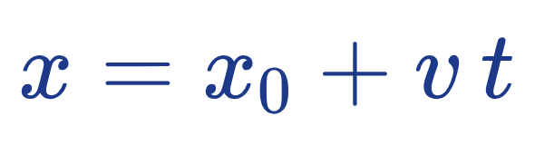
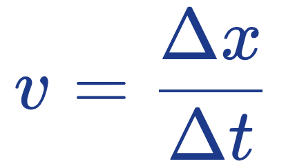
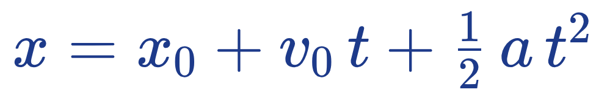
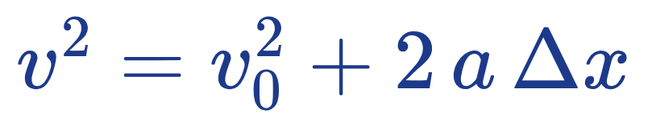
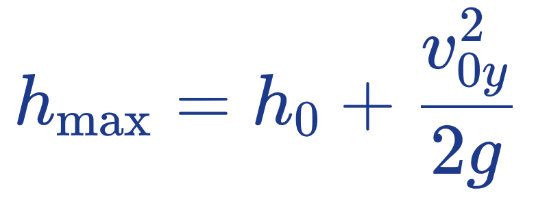
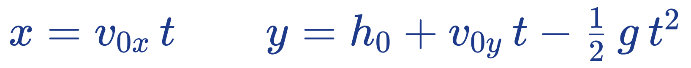
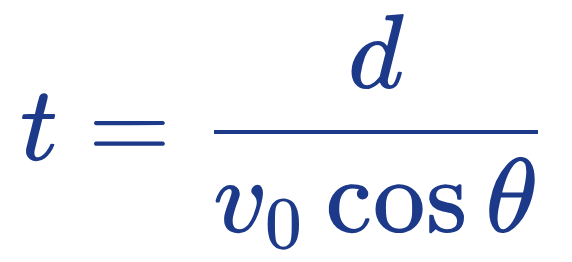
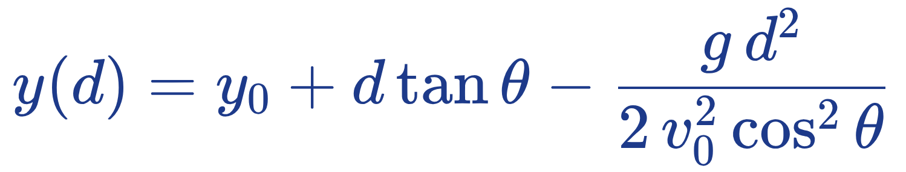
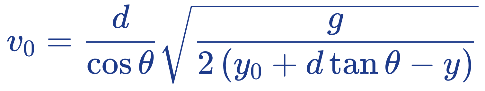

Docente: [nombre del docente] · Grupo [__] · Noviembre 2026
01 · Propósito
¿Qué busca resolver la aplicación?
Convertir los ejercicios de cinemática en una experiencia visual e interactiva.
Necesidad
En clase vemos fórmulas y números, pero cuesta imaginar cómo se mueve el objeto y por qué se usa cada ecuación.
Propuesta
Una aplicación web que recibe los datos del problema, lo resuelve paso a paso y lo simula con gráficas y animación.
Valor educativo
Relacionar datos, fórmulas, gráficas y trayectoria; practicar y revisar tareas con el método de clase.
Objetivo general:
Desarrollar una aplicación web que permita resolver, simular y explicar problemas de MRU, MRUA y tiro parabólico, mostrando el procedimiento como se hace en clase.
02 · Alcance
Movimientos que contempla la aplicación
Movimiento unidimensional
MRU
Velocidad constante, aceleración cero.
Un microbús a 15 m/s por la carretera.
MRUA
Aceleración constante: la velocidad cambia parejo.
Un pick-up que frena hasta detenerse.
Movimiento bidimensional
Tiro parabólico
MRU en x y MRUA en y al mismo tiempo.
Una piedra desde el mirador del Cerro Verde.
Para cada movimiento, la aplicación tiene:
① Resolver ejercicio paso a paso
② Simulación con gráficas
③ Modo clase que explica el tema
④ Juego «La hondilla» (parabólico)
03 · Fundamento físico
Modelos matemáticos del motor
Unidades del SI · g = 9.81 m/s² · x positivo a la derecha, y positivo hacia arriba · sin resistencia del aire
MRU


MRUA


Parabólico


04 · Diseño del sistema
Arquitectura en tres capas
La física vive en un solo lugar: el motor en Rust. La interfaz nunca calcula, solo muestra.
Lo que se ve
Interfaz web
React + TypeScript. Formularios, animación en Canvas, gráficas, fórmulas con KaTeX, modo clase y juego.
El puente
Servidor Node.js
Fastify + zod. Recibe el ejercicio en JSON, revisa que los datos sean válidos y llama al motor.
El cerebro
Motor en Rust
Ecuaciones, despejes, simulación paso a paso y la física del juego. Se conecta a Node con napi-rs.
En la web publicada, el mismo motor en Rust corre dentro del navegador, compilado a WebAssembly.
05 · Tecnologías
Herramientas que usamos
Rust + WebAssembly
Motor de física; en la web corre dentro del navegador.
Node.js + Fastify
API que conecta la interfaz con el motor (napi-rs).
React + TypeScript
Interfaz por componentes, con tipos compartidos.
Canvas 2D
Animaciones, gráficas y el juego, a 60 cuadros por segundo.
KaTeX + Web Speech
Fórmulas como en el cuaderno y narración en voz alta.
GitHub + Vercel
Código versionado y publicación automática en la web.
06 · Funcionamiento
Del dato inicial a la solución
El usuario escribe lo que dice el problema y la aplicación hace el resto.
1
Seleccionar
Elegir el movimiento y la herramienta: resolver, clase o juego.
2
Ingresar
Escribir los datos y marcar con ? lo que piden.
3
Validar
Se revisa que los valores sean válidos y que alcancen.
4
Resolver
El motor busca la ecuación con una sola incógnita, despeja y repite.
5
Mostrar
Solución en hoja de cuaderno, animación y gráficas.
💡
Cada respuesta sigue el orden de clase: Datos · Incógnita · Fórmula · Despeje · Sustitución · R/. Si falta un dato o sobra uno que no cuadra, la aplicación lo avisa.
07 · Módulo Resolver
La solución, como en el cuaderno
A la izquierda, los datos
Con ? se marcan las incógnitas. Trae ejercicios de ejemplo de aquí.
A la derecha, la hoja
Fórmula, despeje y sustitución; resultado en recuadro y R/.
Probalo aquí mismo: elegí «Frenado en la carretera».
EN VIVO
08 · Experiencia visual
¿Qué puede observar el usuario?
Animación
El objeto se mueve con sus vectores de velocidad.
Panel de valores
t, x, y, vx y vy en cada instante.
Gráficas y tabla
Trayectoria, posición y velocidad contra el tiempo; la tabla se descarga en CSV.
09 · Modo clase
La aplicación explica el tema
EN VIVO
Por escenas
Como diapositivas: la animación muestra lo que dice el texto.
En voz alta
Puede narrar cada escena.
Con tus datos
Explica tu ejercicio, no solo el ejemplo.
10 · Juego
La hondilla: el parabólico jugando
EN VIVO · ¡A jugar!
Botá las latas · 5 niveles
Bajá mangos · 3 palos
Hondillazos entre amigos · 2 jugadores
11 · Juego por dentro
¿Cómo sugiere el tiro perfecto?
1
En x es un MRU: despejamos el tiempo que tarda en llegar a la distancia d.

2
Lo sustituimos en la altura del MRUA y queda la ecuación de la trayectoria.

3
Ponemos la posición del mango (d, y) y despejamos la rapidez que hace falta.

Palo de la abuela con θ = 45°: la aplicación sugiere v₀ ≈ 14.6 m/s.
12 · Verificación
Pruebas realizadas
53
pruebas automáticas, todas pasan: 16 del motor, 10 del servidor y 27 de la interfaz.
23
pruebas de paridad: la copia sin internet (un solo HTML) da los mismos resultados que el motor en Rust.
10/10
niveles del juego comprobados: cada uno se puede ganar con algún tiro.
Además comparamos los ejemplos con ejercicios resueltos a mano. Las pruebas dan confianza en los casos probados, pero no garantizan que no haya errores en todos los casos posibles.
13 · Publicación
Acceso a la aplicación
Sitio web · Vercel
cinemalab-mec115.vercel.app
Se abre desde cualquier navegador o celular, sin instalar nada.
Código · GitHub
github.com/dennisavila12/cinemalab
Cada cambio que se sube a GitHub se publica solo en Vercel.
¡Escanéenlo y pruébenla!
14 · Alcances y mejoras
Limitaciones conocidas y trabajo futuro
Supuestos del modelo
Sin resistencia del aire, g constante y el objeto como partícula. Por eso, lanzando desde el suelo, el alcance máximo siempre sale a 45°.
Observaciones pendientes
Resuelve un solo móvil a la vez: no hace problemas de encuentro. La narración depende de las voces que traiga el navegador.
Mejoras posibles
Agregar el aire, caída libre y MCU, problemas de encuentro y exportar la hoja de solución en PDF.
Cierre
De la fórmula al hondillazo
CinemaLab integra física, programación y visualización: el procedimiento del cuaderno, animado y jugable.
¿Preguntas?
Pruébenla: cinemalab-mec115.vercel.app
Control conectado
Controlá la presentación con tu teléfono
Escaneá el código con la cámara del teléfono. Ahí vas a ver tus notas, el tiempo de cada lámina y los botones para avanzar.
O abrí … y escribí el código:
······
Preparando conexión…
Teclas: ← → espacio para avanzar · F pantalla completa · C este cuadro.